Introduction to AlpsNMR
AlpsNMR authors
2026-08-19
Source:vignettes/Vig01-introduction-to-alpsnmr.Rmd
Vig01-introduction-to-alpsnmr.RmdAbstract
An introduction to the AlpsNMR package, showing the most relevant functions and a proposed workflow. This includes loading bruker NMR samples, adding sample annotations, preprocessing the spectra, detecting outliers, detecting peaks, aligning the samples and integrating the peaks to build a peak table.
Getting started
The AlpsNMR package has most of its functions prefixed
with nmr_. The main reason for this is to avoid conflicts
with other packages. Besides, it helps for autocompletion: Most coding
environments such as RStudio will let you see most of the function names
by typing nmr_ followed by pressing the tab key.
This vignette assumes some basic knowledge of NMR and data analysis, and some basic R programming.
We will start by loading AlpsNMR along some convenience
packages:
##
## Attaching package: 'dplyr'## The following objects are masked from 'package:stats':
##
## filter, lag## The following objects are masked from 'package:base':
##
## intersect, setdiff, setequal, union##
## Attaching package: 'AlpsNMR'## The following object is masked from 'package:stats':
##
## filterEnable parallellization
This package is able to parallellize several functions through the
use of the BiocParallel package. Whether to parallelize or
not is left to the user that can control the parallellization
registering backends. Please check
vignette("Introduction_To_BiocParallel", package = "BiocParallel").
Data: The MeOH_plasma_extraction dataset
To explore the basics of the AlpsNMR package, we have included three NMR samples acquired in a 600 MHz Bruker instrument bundled with the package. The samples are pooled quality control plasma samples, that were extracted with methanol. They only contain small molecules.
If you have installed this package, you can obtain the directory where the samples are with the command:
MeOH_plasma_extraction_dir <- system.file("dataset-demo", package = "AlpsNMR")
MeOH_plasma_extraction_dir## [1] "/__w/_temp/Library/AlpsNMR/dataset-demo"The demo directory includes three zipped Bruker samples and a dummy Excel metadata file:
list.files(MeOH_plasma_extraction_dir)## [1] "10.zip" "20.zip" "30.zip"
## [4] "dummy_metadata.xlsx" "README.txt"Since these are quality control samples, the metadata is a dummy table:
MeOH_plasma_extraction_xlsx <- file.path(MeOH_plasma_extraction_dir, "dummy_metadata.xlsx")
annotations <- readxl::read_excel(MeOH_plasma_extraction_xlsx)
annotations## # A tibble: 3 × 3
## NMRExperiment SubjectID TimePoint
## <chr> <chr> <chr>
## 1 10 Ana baseline
## 2 20 Ana 3 months
## 3 30 Elia baselineLoading samples
The function to read samples is called
nmr_read_samples(). It expects a character vector with the
samples to load that can be paths to directories of Bruker format
samples or paths to JDX files.
Additionally, this function can filter by pulse sequences (e.g. load only NOESY samples) or loading only metadata.
zip_files <- fs::dir_ls(MeOH_plasma_extraction_dir, glob = "*.zip")
zip_files## /__w/_temp/Library/AlpsNMR/dataset-demo/10.zip
## /__w/_temp/Library/AlpsNMR/dataset-demo/20.zip
## /__w/_temp/Library/AlpsNMR/dataset-demo/30.zip
dataset <- nmr_read_samples(sample_names = zip_files)
dataset## An nmr_dataset (3 samples)If your samples happen to be in different folders per class, AlpsNMR provides convenience functions to read them as well. With this example:
- your_dataset/
+ control/
* 10/
* 20/
* 30/
+ mutated/
* 10/
* 20/
* 30/You could use:
dataset <- nmr_read_samples_dir(c("your_dataset/control", "your_dataset/mutated"))
datasetIf after reading the ?nmr_read_samples page you still
have issues, feel free to open an issue at https://github.com/sipss/AlpsNMR/issues and ask for
clarification.
Adding annotations
We can embed the external annotations we loaded above into the dataset:
dataset <- nmr_meta_add(dataset, metadata = annotations, by = "NMRExperiment")And retrieve them from the dataset:
nmr_meta_get(dataset, groups = "external")## # A tibble: 3 × 3
## NMRExperiment SubjectID TimePoint
## <chr> <chr> <chr>
## 1 10 Ana baseline
## 2 20 Ana 3 months
## 3 30 Elia baselineIf you want to learn more about sample metadata (including
acquisition and FID processing parameters), as well as more complex ways
of adding annotations, check out the
vignette("Vig02-handling-metadata-and-annotations", package = "AlpsNMR").
Phasing
It might be the case that automatically reconstructed metabolite NMR
spectra have a first-order phase error. AlpsNMR provides a convenient
wrapper function the NMRphasing package, offering a variety
of algorithms to estimate and correct for phase errors, which arise on
physical grounds.
#dataset <- nmr_autophase(dataset, method="MPC_DANM")Interpolation
1D NMR samples can be interpolated together, in order to arrange all the spectra into a matrix, with one row per sample. Here we choose the range of ppm values that we want to include in further analyses.
dataset <- nmr_interpolate_1D(dataset, axis = c(min = -0.5, max = 10))If the axis = NULL then the ppm axis is autodetected
from the samples.
See nmr_interpolate_1D() for further reference on the
axis options.
Plotting samples
Plotting many spectra with so many points is quite expensive so it is possible to include only some regions of the spectra or plot only some samples.
Exclude regions
Some regions can easily be excluded from the spectra with
nmr_exclude_region():
Filter samples
Maybe we just want to analyze a subset of the data, e.g., only a class group or a particular gender. We can filter some samples according to their metadata as follows:
samples_10_20 <- filter(dataset, SubjectID == "Ana")
nmr_meta_get(samples_10_20, groups = "external")## # A tibble: 2 × 3
## NMRExperiment SubjectID TimePoint
## <chr> <chr> <chr>
## 1 10 Ana baseline
## 2 20 Ana 3 monthsRobust PCA for outlier detection
The AlpsNMR package includes robust PCA analysis for outlier detection.
pca_outliers_rob <- nmr_pca_outliers_robust(dataset, ncomp = 3)
nmr_pca_outliers_plot(dataset, pca_outliers_rob)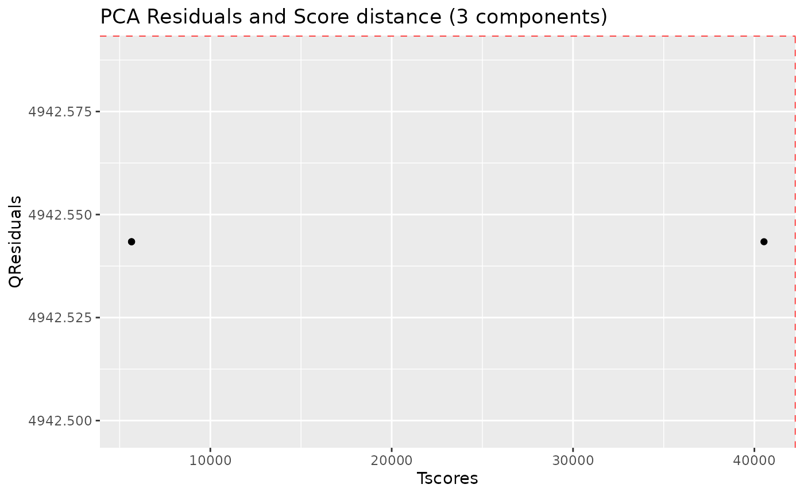
Samples with greater QResiduals and Tscores than the threshold defined by the red line are candidates for further exploration and exclusion. With this small dataset, there is not much to see.
Baseline estimation
Spectra may display an unstable baseline, specially when processing blood/fecal samples.
The peak detection and integration algorithms benefit from having an estimation of the baseline, so it is advisable to compute it first and check it fits as expected.
See before:
Estimate the baseline. nmr_baseline_estimation() uses
the PSALSA algorithm and by default automatically tunes its
lambda/p/k parameters with
tune_psalsa(); pass explicit numbers instead of
"auto" for any of them to skip tuning that parameter (see
?nmr_baseline_estimation and ?psalsa):
dataset <- nmr_baseline_estimation(dataset)And after:
# TODO: Simplify this plot
spectra_to_plot <- tidy(dataset, chemshift_range = c(1.37, 2.5))
baseline_to_plot <- tidy(dataset, chemshift_range = c(1.37, 2.5), matrix_name = "data_1r_baseline")
ggplot(mapping = aes(x = chemshift, y = intensity, color = NMRExperiment)) +
geom_line(data = spectra_to_plot) +
geom_line(data = baseline_to_plot, linetype = "dashed") +
facet_wrap(~NMRExperiment, ncol = 1)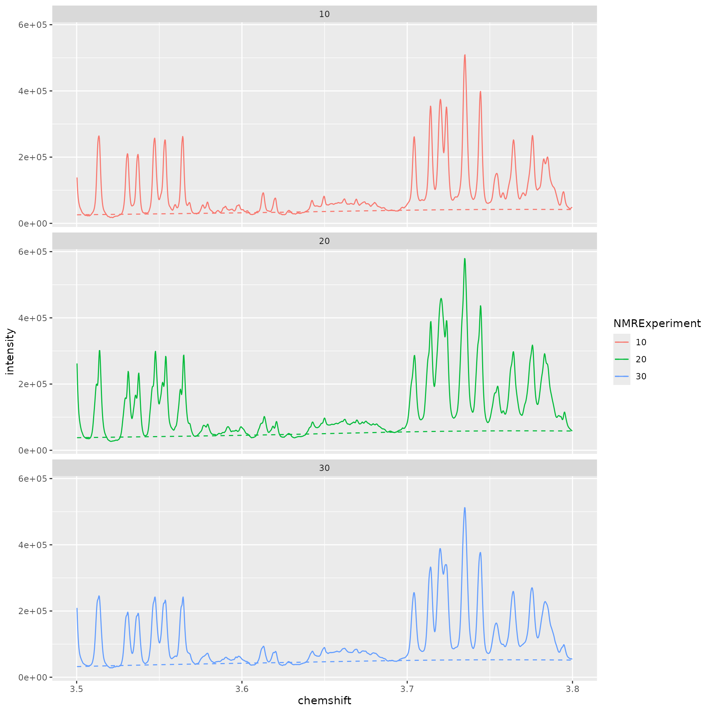
# TODO: Simplify this plot
spectra_to_plot <- tidy(dataset, chemshift_range = c(3.5, 3.8))
baseline_to_plot <- tidy(dataset, chemshift_range = c(3.5, 3.8), matrix_name = "data_1r_baseline")
ggplot(mapping = aes(x = chemshift, y = intensity, color = NMRExperiment)) +
geom_line(data = spectra_to_plot) +
geom_line(data = baseline_to_plot, linetype = "dashed") +
facet_wrap(~NMRExperiment, ncol = 1)Peak detection
The peak detection is performed on short spectra segments using a continuous wavelet transform. Peaks below a threshold intensity are automatically discarded.
Our current approach relies on the use of the baseline threshold
(baselineThresh) automatically calculated (see
?nmr_baseline_threshold) and the Signal to Noise Threshold
(SNR.Th) to discriminate valid peaks from noise.
See ?nmr_detect_peaks for more information.
baselineThresh <- nmr_baseline_threshold(dataset, range_without_peaks = c(9.5, 10), method = "median3mad")
nmr_baseline_threshold_plot(dataset, baselineThresh, chemshift_range = c(9.5, 10))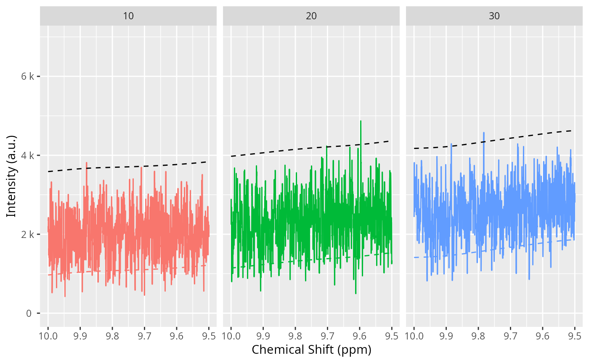
peak_list_initial <- nmr_detect_peaks(
dataset,
nDivRange_ppm = 0.1,
scales = seq(1, 16, 2),
baselineThresh = baselineThresh,
SNR.Th = 3,
fit_lorentzians = TRUE
)We can get an overview of the number of peaks we detect on each sample and each chemical shift region:
nmr_detect_peaks_plot_overview(peak_list_initial)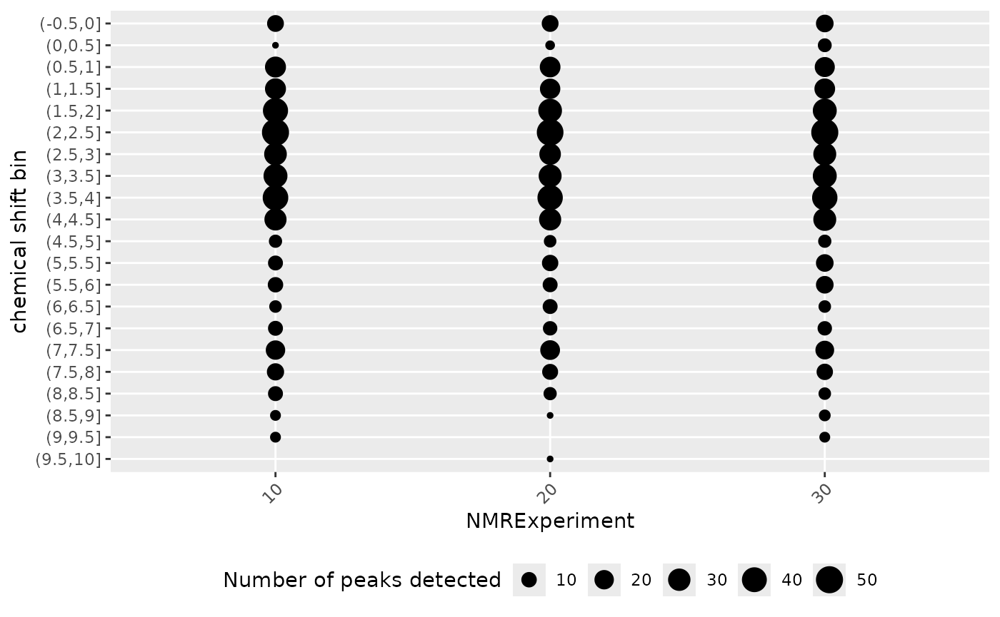
We can explore in a more detailed way the detected peaks:
nmr_detect_peaks_plot(dataset, peak_list_initial, NMRExperiment = "10", chemshift_range = c(3, 3.3))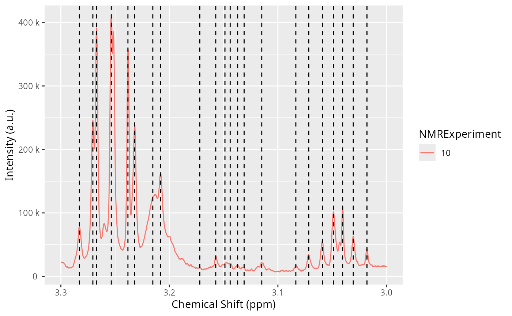
Let’s the detected peaks in a smaller region across samples:
peak_list_in_range <- filter(peak_list_initial, ppm > 3.22, ppm < 3.24)
peak_list_in_range## # A tibble: 6 × 11
## peak_id NMRExperiment ppm pos intensity_raw intensity ppm_infl_min
## <chr> <chr> <dbl> <dbl> <dbl> <dbl> <dbl>
## 1 Peak0209 10 3.23 16281 239459. 227802. 3.23
## 2 Peak0210 10 3.24 16308 358753. 346936. 3.24
## 3 Peak0628 20 3.23 16283 291094. 273439. 3.23
## 4 Peak0629 20 3.24 16309 399656. 381774. 3.24
## 5 Peak1057 30 3.23 16281 243670. 238431. 3.23
## 6 Peak1058 30 3.24 16308 464835. 459510. 3.24
## # ℹ 4 more variables: ppm_infl_max <dbl>, gamma_ppb <dbl>, area <dbl>,
## # norm_rmse <dbl>
nmr_detect_peaks_plot_peaks(
dataset,
peak_list_initial,
peak_ids = peak_list_in_range$peak_id,
caption = paste("{peak_id}",
"(NMRExp.\u00A0{NMRExperiment},",
"gamma(ppb)\u00a0=\u00a0{gamma_ppb},",
"\narea\u00a0=\u00a0{area},",
"nrmse\u00a0=\u00a0{norm_rmse})")
)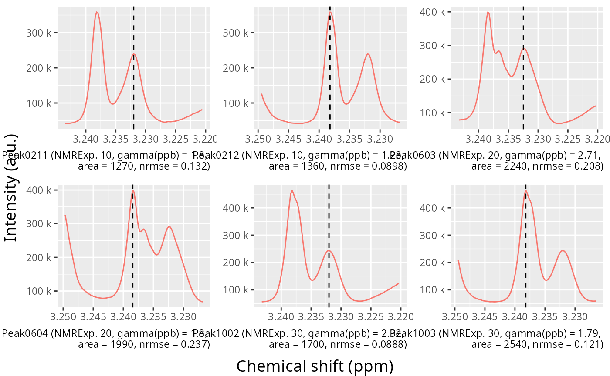
peak_list_initial_accepted <- peaklist_accept_peaks(
peak_list_initial,
dataset,
area_min = 50,
keep_rejected = FALSE,
verbose = TRUE
)## Acceptance report
## ℹ 897/1188 peaks accepted. (75.5%)
## ℹ Removing 291 peaksSpectra alignment
Once we have a preliminary peak list, we can align the spectra using
the nmr_align() function. We expect shifts between the
spectra, this becomes necessary so we can cluster the peaks correctly
afterwards and build a peak table.
The alignment process takes several parameters, including:
NMRExp_ref: An NMRExperiment with a reference sample. Usually it should be a pool of all samples if it is available. Otherwise, you can usenmr_align_find_ref()to find a sample. Depending on how heterogeneous your dataset is, there may not be a good reference sample (even if the function picks one, the alignment might not succeed), so please always check the results afterwards.maxShift_ppm: The maximum shift allowed when aligning the spectra.acceptLostPeak: Set it toTRUEif you want to accept some peaks getting lost during the alignment process. Since the peak detection is never perfect, it is reasonable to accept some lost peaks.
NMRExp_ref <- nmr_align_find_ref(dataset, peak_list_initial_accepted)
message("Your reference is NMRExperiment ", NMRExp_ref)## Your reference is NMRExperiment 30
dataset_align <- nmr_align(
nmr_dataset = dataset,
peak_data = peak_list_initial_accepted,
NMRExp_ref = NMRExp_ref,
maxShift_ppm = 0.0015,
acceptLostPeak = TRUE
)Compare the dataset before and after alignment, to verify the quality of the alignment:
plot(dataset, chemshift_range = c(3.025, 3.063))
plot(dataset_align, chemshift_range = c(3.025, 3.063))
cowplot::plot_grid(
plot(dataset, chemshift_range = c(3.22, 3.25)) + theme(legend.position = "none"),
plot(dataset_align, chemshift_range = c(3.22, 3.25)) + theme(legend.position = "none")
)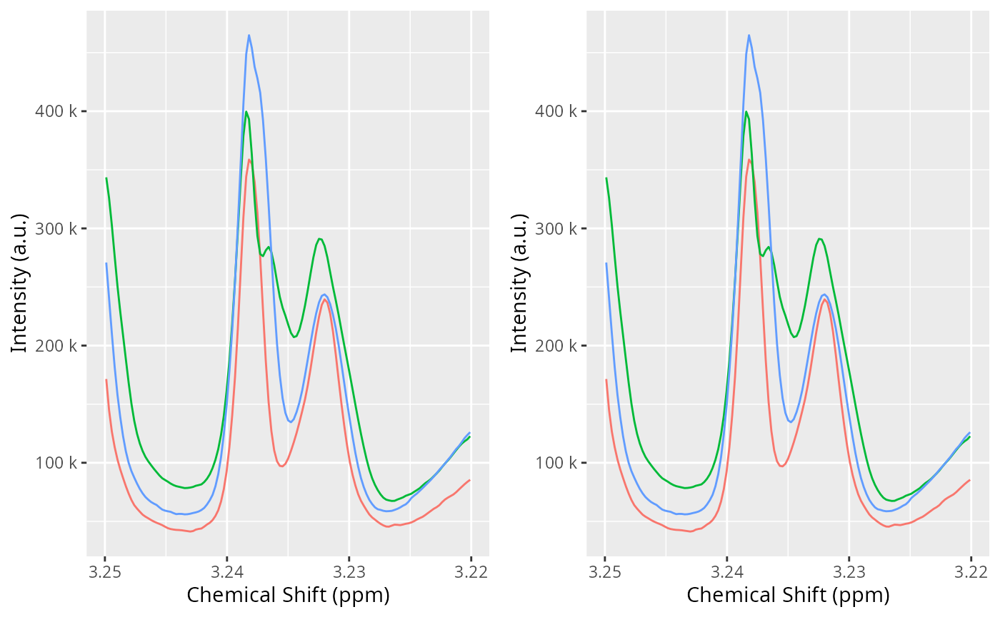
Normalization
With the spectra correctly aligned, you can use spectra normalization techniques. We normalize after alignment because some of the normalization techniques are sensitive to misalignments.
There are multiple normalization techniques available. The most
strongly recommended is the Probabilistic Quantile Normalization
(pqn), but it requires more samples for its internal
estimations to be reliable, as it needs a computation of the median
spectra. Nevertheless, it is possible to compute it:
dataset_norm <- nmr_normalize(dataset_align, method = "pqn")## Warning: There are not enough samples for reliably estimating the median spectra
## ℹ The Probabalistic Quotient Normalization requires several samples to compute
## the median spectra. Your number of samples is low
## ℹ Review your peaks before and after normalization to ensure there are no big
## distortionsThe normalization essentially computes a normalization factor for each sample.
The plot shows the dispersion with respect to the median of the normalization factors, and can highlight samples with abnormally large or small normalization factors.
normalization_info <- nmr_normalize_extra_info(dataset_norm)
normalization_info$norm_factor## NMRExperiment norm_factor norm_factor_norm
## 1 10 0.8098331 0.8098331
## 2 20 1.1145304 1.1145304
## 3 30 1.0000000 1.0000000
normalization_info$plot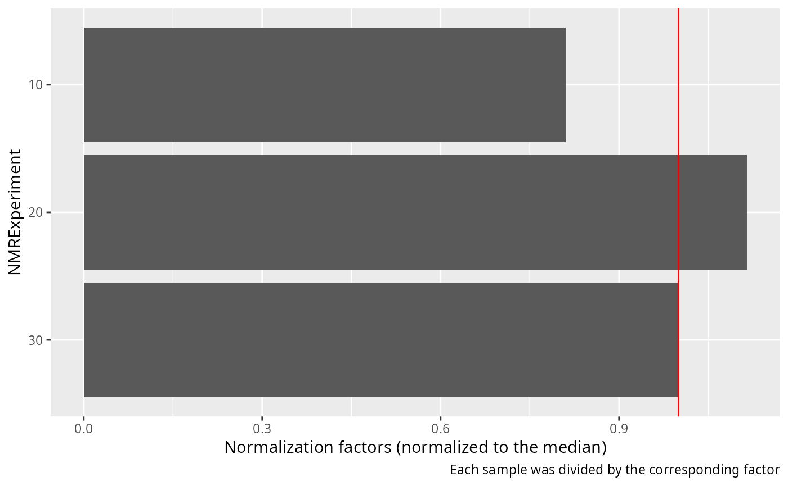
We can confirm sample 20 is now slightly more diluted:
to_plot <- dplyr::bind_rows(
tidy(dataset_align, NMRExperiment = "20", chemshift_range = c(2,2.5)) %>%
mutate(Normalized = "No"),
tidy(dataset_norm, NMRExperiment = "20", chemshift_range = c(2,2.5)) %>%
mutate(Normalized = "Yes"),
)
ggplot(data = to_plot, mapping = aes(x = chemshift, y = intensity, color = Normalized)) +
geom_line() +
scale_x_reverse() +
labs(y = "Intensity", x = "Chemical shift (ppm)",
caption = "The normalization slightly diluted experiment 20")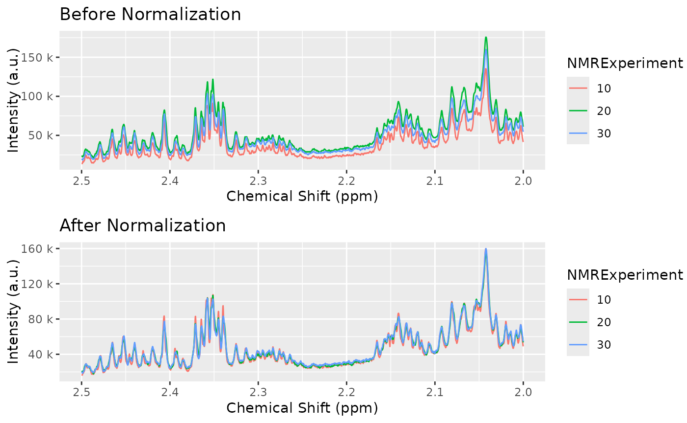
And all samples are more homogeneous now:
cowplot::plot_grid(
plot(dataset_align, chemshift_range = c(2, 2.5)) + labs(title="Before Normalization"),
plot(dataset_norm, chemshift_range = c(2, 2.5)) + labs(title="After Normalization"),
ncol = 1
)
Peak grouping
If you align or normalize your samples, you should rerun the peak detection to ensure the peak positions and estimations are well calculated:
baselineThresh <- nmr_baseline_threshold(dataset_norm, range_without_peaks = c(9.5, 10), method = "median3mad")
nmr_baseline_threshold_plot(dataset_norm, baselineThresh, chemshift_range = c(9.5, 10))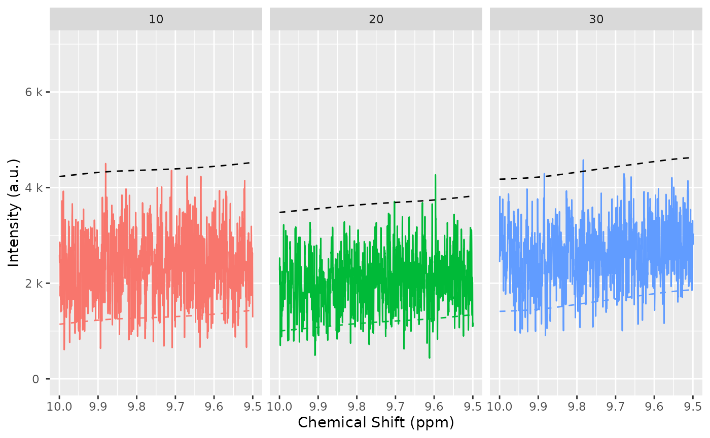
peak_list_for_clustering_unfiltered <- nmr_detect_peaks(
dataset_norm,
nDivRange_ppm = 0.1,
scales = seq(1, 16, 2),
baselineThresh = baselineThresh,
SNR.Th = 3,
fit_lorentzians = TRUE,
verbose = TRUE
)
peak_list_for_clustering <- peaklist_accept_peaks(
peak_list_for_clustering_unfiltered,
dataset_norm,
area_min = 50,
keep_rejected = FALSE,
verbose = TRUE
)## Acceptance report
## ℹ 913/1188 peaks accepted. (76.9%)
## ℹ Removing 275 peaksFeel free to plot, explore and further curate your peak list. Or proceed with the current one:
Once we have a peak list for each sample peak_list, we
need to turn it into a table, merging peaks from different samples
together.
clustering <- nmr_peak_clustering(peak_list_for_clustering, verbose = TRUE)## ℹ The maximum distance between two peaks in the same cluster is
## of 8.3 ppbs
cowplot::plot_grid(
clustering$num_cluster_estimation$plot + labs(title = "Full"),
clustering$num_cluster_estimation$plot +
xlim(clustering$num_cluster_estimation$num_clusters-50, clustering$num_cluster_estimation$num_clusters+50) +
ylim(0, 10*clustering$num_cluster_estimation$max_dist_thresh_ppb) +
labs(title = "Fine region")
)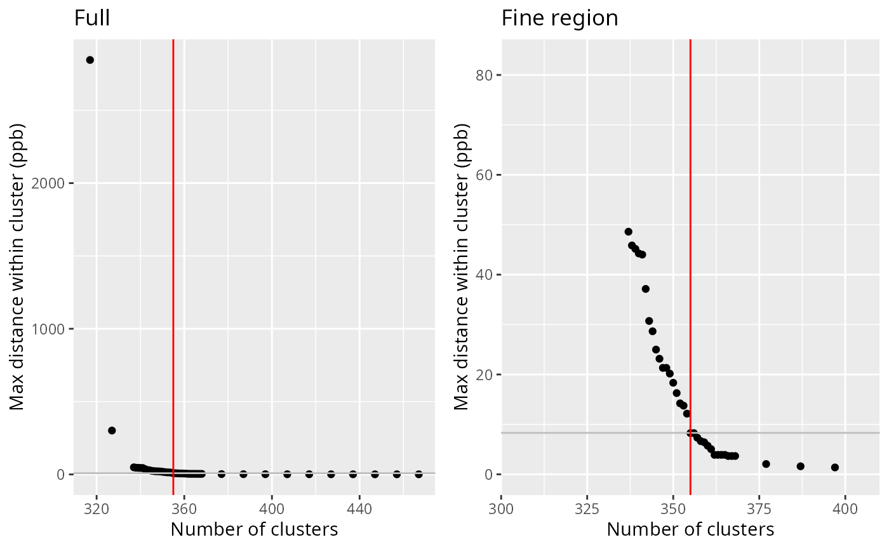
peak_list_clustered <- clustering$peak_dataWe can plot the samples, with the detected peaks and how they have been connected. This allows us to compare the peak detection across samples, and check how good the peak matching is.
If peaks are matched they are connected with a black segment. If peaks are detected but not matched, they appear as a dot. If you see a peak, without a point on top then it means the peak was not detected or it was filtered out.
nmr_peak_clustering_plot(
dataset = dataset_norm,
peak_list_clustered = peak_list_clustered,
NMRExperiments = c("10", "20"),
chemshift_range = c(2.4, 3.0)
)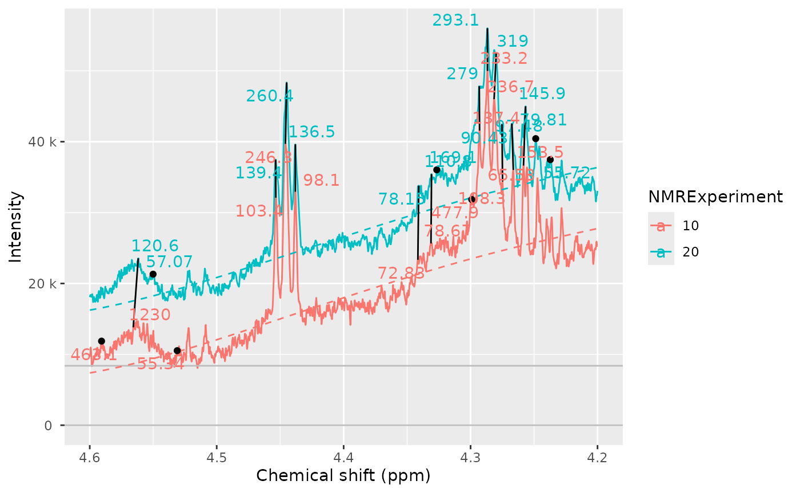
Sometimes we see peaks and we wonder why are they not detected. We
can include the baselineThresh to plot it in the sample as
well. This can help to diagnose if the baselineThresh
argument is the cause of a peak not being detected.
nmr_peak_clustering_plot(
dataset_norm,
peak_list_clustered,
NMRExperiments = c("10", "20"),
chemshift_range = c(4.2, 4.6),
baselineThresh = baselineThresh
)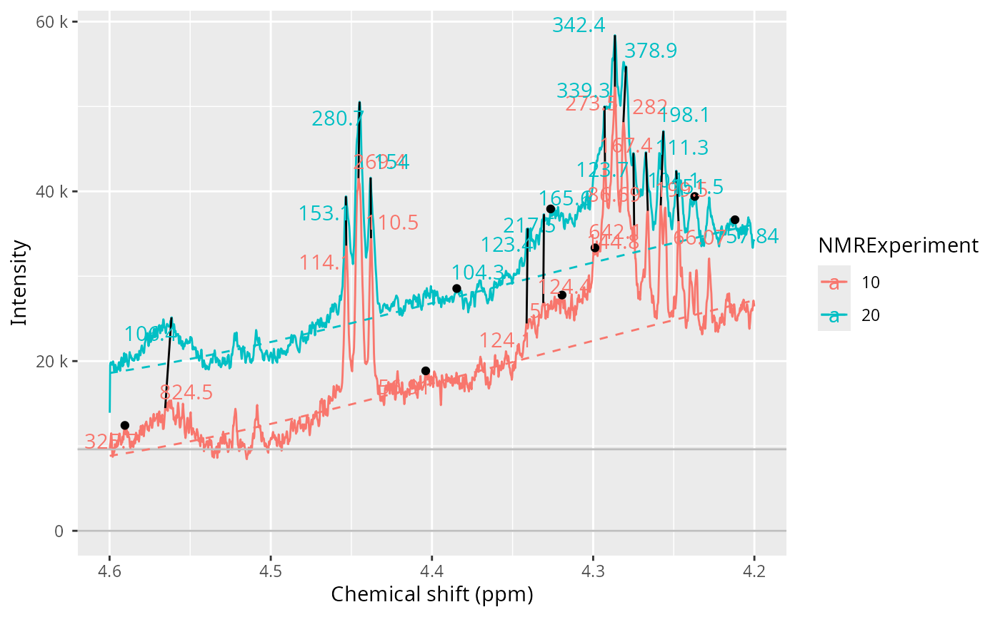
peak_table <- nmr_build_peak_table(peak_list_clustered, dataset_norm)
peak_table## An nmr_dataset_peak_table (3 samples, and 355 peaks)
peak_matrix <- nmr_data(peak_table)
peak_matrix[1:3, 1:8]## 0.1675 0.2090 0.2423 0.2558 0.7780 0.8117 0.8223 0.8247
## 10 51.08546 NA NA NA 78.89322 357.2753 NA NA
## 20 61.06040 87.96936 55.11522 66.90915 NA 612.8880 1928.566 849.0058
## 30 55.28203 NA NA NA NA 409.5786 NA 1212.8217Or you can get a data frame with the corresponding annotations:
peak_table_df <- as.data.frame(peak_table)
peak_table_df## NMRExperiment SubjectID TimePoint 0.1675 0.2090 0.2423 0.2558
## 10 10 Ana baseline 51.08546 NA NA NA
## 20 20 Ana 3 months 61.06040 87.96936 55.11522 66.90915
## 30 30 Elia baseline 55.28203 NA NA NA
## 0.7780 0.8117 0.8223 0.8247 0.8330 0.8445 0.8477 0.8559
## 10 78.89322 357.2753 NA NA 710.110 715.6691 738.7595 3200.742
## 20 NA 612.8880 1928.566 849.0058 1306.510 1267.1872 NA 2069.311
## 30 NA 409.5786 NA 1212.8217 1046.755 1004.2800 NA 2149.300
## 0.8603 0.8656 0.8727 0.8782 0.8908 0.9034 0.9084 0.9157
## 10 409.0566 1054.225 407.8691 653.0936 385.8580 428.4875 416.8717 408.7087
## 20 550.0977 985.589 659.2695 952.1723 789.1042 865.2645 702.3890 NA
## 30 710.2219 1112.220 720.2370 680.5624 578.7808 661.1270 630.9637 737.7637
## 0.9194 0.9314 0.9435 0.9552 0.9655 0.9758 0.9903 1.0020
## 10 365.2795 378.1862 428.2072 793.3984 1027.927 676.6109 811.5128 815.6072
## 20 561.5452 576.1968 628.8330 970.7369 1434.065 936.3961 1077.0601 1057.9440
## 30 567.2010 543.3919 581.8288 878.8519 1172.114 734.5825 976.0007 954.9181
## 1.0089 1.0208 1.0409 1.0526 1.0594 1.0714 1.0804 1.1404
## 10 294.3225 250.7100 723.8798 718.4913 90.39889 61.44218 NA 90.83393
## 20 365.6849 323.7913 959.4657 947.4252 NA 199.71761 53.69498 84.96744
## 30 354.8203 290.5901 838.3821 836.2185 130.13741 85.56252 NA 85.42303
## 1.1505 1.1757 1.1869 1.1980 1.2083 1.2179 1.2294 1.2361
## 10 137.2832 290.1669 902.3254 849.1927 1159.979 1820.573 2031.098 3777.332
## 20 131.4317 1078.5938 NA 1268.2512 1951.049 2835.383 4216.754 NA
## 30 140.8397 640.8441 1136.3181 1169.4409 1692.988 2784.409 3504.205 7919.911
## 1.2408 1.2546 1.2713 1.2810 1.3261 1.3378 1.4309 1.4423
## 10 10292.954 2786.566 1112.05 NA 16470.01 16615.62 165.1296 177.8971
## 20 4371.827 3392.917 1943.61 1217.537 20051.05 20389.94 262.1021 311.2064
## 30 5421.900 8514.989 1552.27 NA 19383.34 19353.60 227.8039 249.5681
## 1.4792 1.4914 1.5183 1.5228 1.5363 1.5476 1.5586 1.6195
## 10 1348.223 1365.259 220.6010 232.6171 95.43932 55.18257 53.28346 73.32121
## 20 1764.986 1736.672 326.9347 397.8689 181.94815 89.82883 53.89816 101.48732
## 30 1579.710 1598.925 NA 243.4968 165.66025 177.71459 63.59754 106.35686
## 1.6443 1.6565 1.6677 1.6752 1.6798 1.6883 1.6928 1.6991
## 10 NA NA 95.08000 54.26335 57.66983 151.4941 96.52715 105.3946
## 20 NA NA 89.79094 119.26123 89.70272 203.4660 NA 151.0623
## 30 52.62212 60.80527 78.14929 91.04524 64.53941 201.0080 190.89562 137.7921
## 1.7070 1.7097 1.7209 1.7234 1.7351 1.7472 1.7523 1.7612
## 10 203.9568 263.8802 921.9893 1119.6223 633.3949 346.8474 230.7240 111.5795
## 20 480.3033 NA NA 761.3620 698.5521 338.5243 290.5498 185.6960
## 30 NA 440.3188 NA 772.4068 618.9626 396.2989 234.8644 133.0897
## 1.7649 1.8997 1.9210 1.9313 1.9439 1.9542 1.9616 1.9719
## 10 NA 95.97927 1286.486 507.8696 286.7663 317.9357 298.2411 322.9040
## 20 NA 129.14025 1408.411 335.3666 530.1569 485.4174 294.7796 657.6382
## 30 82.87866 117.58531 1553.336 427.3524 340.2853 391.6838 383.4004 386.5467
## 1.9811 1.9905 2.0028 2.0076 2.0141 2.0193 2.0306 2.0420
## 10 351.5953 360.2921 340.8773 367.2231 348.3025 340.7364 457.6750 1541.193
## 20 544.9395 454.8945 478.2542 400.6461 472.4859 450.8061 600.4364 1775.509
## 30 495.8418 383.5089 401.8877 396.6980 367.0080 405.4268 528.4684 1688.361
## 2.0523 2.0668 2.0709 2.0805 2.0920 2.1067 2.1147 2.1191
## 10 1730.317 991.0887 NA 656.0809 475.1777 194.2780 147.0195 334.2648
## 20 1795.838 1427.8684 NA 916.3980 479.5928 313.5321 378.0090 405.6761
## 30 1559.653 959.6610 1044.788 790.7947 503.5128 237.9229 208.3747 372.4308
## 2.1271 2.1321 2.1408 2.1442 2.1485 2.1525 2.1569 2.1651
## 10 345.8123 431.9914 453.3231 366.1951 280.5636 266.0753 248.3894 154.6258
## 20 428.3601 456.6942 798.7703 NA 635.6160 359.2126 325.0285 220.8420
## 30 345.4345 453.6771 553.8638 526.1178 NA 388.8536 405.0020 200.5636
## 2.1901 2.1979 2.2642 2.2715 2.2761 2.2834 2.2877 2.2949
## 10 NA NA 77.41759 104.3933 108.2990 113.2778 NA 127.8371
## 20 60.7756 71.3697 106.29518 150.8692 157.2830 186.5473 149.6211 196.7408
## 30 105.5647 NA 104.53871 143.4698 147.7157 162.3790 363.4141 185.4918
## 2.3011 2.3139 2.3251 2.3396 2.3449 2.3510 2.3572 2.3643
## 10 153.4230 146.5142 168.6125 370.3899 305.8114 953.9277 769.0089 265.1607
## 20 346.9575 248.0853 235.1903 613.1255 417.5840 884.0701 771.0478 445.7311
## 30 264.7335 204.6411 205.0527 445.6806 385.2691 790.5882 643.9073 336.5536
## 2.3710 2.3850 2.3935 2.4063 2.4194 2.4301 2.4400 2.4457
## 10 273.6382 78.02169 149.4514 339.7198 247.2066 126.9344 252.9664 106.6821
## 20 347.2986 134.96140 236.4510 510.9935 327.4739 275.8371 300.3945 207.2489
## 30 304.3434 108.70069 243.3707 376.1131 275.0529 194.1857 257.5521 172.3649
## 2.4521 2.4572 2.4650 2.4712 2.4790 2.4910 2.4948 2.5060
## 10 352.2795 114.1569 252.9551 51.80057 138.8901 119.25830 80.35709 59.63695
## 20 413.1904 142.0703 281.5338 NA 180.4494 NA 160.03120 89.40807
## 30 377.0468 149.2879 320.8445 NA 158.7794 71.85944 96.36363 89.71158
## 2.5159 2.5225 2.5280 2.5482 2.6520 2.6617 2.6777 2.6926
## 10 51.42431 88.52720 NA 109.6656 153.6431 158.7750 175.3357 220.2347
## 20 102.39897 129.35007 73.40532 148.7163 237.5724 163.3591 280.3932 370.7327
## 30 78.51165 97.36269 NA 125.6059 177.8268 113.7490 193.7527 268.4406
## 2.7069 2.7132 2.7334 2.7430 2.7577 2.7797 2.7992 2.8051
## 10 154.8848 115.7247 85.2834 89.16492 192.7679 199.6328 64.43464 NA
## 20 NA 196.5430 126.1629 190.68923 248.9334 206.9141 79.14863 65.99178
## 30 240.8280 165.8953 139.6852 121.53340 275.7626 449.6317 75.87067 54.75651
## 2.8282 2.8338 2.8502 2.8694 2.8790 2.8927 2.9059 2.9194
## 10 NA 93.65616 NA 56.05531 NA 85.22906 NA NA
## 20 63.44585 55.39541 51.10466 NA NA 67.53545 67.34202 72.20774
## 30 82.55846 79.32850 54.99388 83.49318 84.05553 98.42498 77.05737 102.05981
## 2.9338 2.9411 2.9480 2.9583 2.9679 2.9743 2.9937 3.0181
## 10 71.44083 160.8873 81.33895 95.31124 157.0652 126.5746 NA 204.1747
## 20 82.51927 104.5011 NA NA NA 126.7378 178.7633 266.4334
## 30 130.51824 196.4485 223.67675 237.23156 183.0325 275.8624 669.1135 306.0213
## 3.0305 3.0404 3.0488 3.0592 3.0715 3.0832 3.1142 3.1305
## 10 368.6590 443.0407 743.8358 315.8578 183.1678 53.7107 110.9366 NA
## 20 484.1493 590.8943 924.9049 439.1531 259.8885 NA 134.4038 NA
## 30 494.1504 606.2995 851.1567 421.0082 273.4654 122.7927 200.4080 109.5963
## 3.1369 3.1443 3.1474 3.1575 3.1726 3.2084 3.2153 3.2320
## 10 63.61408 91.41029 231.0188 123.8731 NA 1665.576 4128.127 1612.067
## 20 69.07009 87.61057 120.0735 162.8784 NA 2096.549 4177.702 2089.373
## 30 129.07263 NA 320.6265 208.8696 210.5359 2021.842 4597.762 1783.222
## 3.2382 3.2524 3.2673 3.2705 3.2827 3.3017 3.3929 3.4030
## 10 1707.343 4802.788 2145.186 1647.295 528.9801 128.6854 962.2449 947.1589
## 20 1836.738 4980.030 2640.540 1814.102 658.8550 173.4573 1170.9951 NA
## 30 2603.170 4519.839 2846.569 2032.723 655.7228 169.9543 1454.2725 1541.1803
## 3.4083 3.4186 3.4243 3.4347 3.4445 3.4583 3.4617 3.4679
## 10 3323.864 2447.221 2694.735 1183.283 NA 1080.073 1156.080 1213.631
## 20 3837.299 2885.097 2982.055 1647.772 NA 1562.423 1149.902 1607.187
## 30 3603.656 2865.789 3450.458 1691.593 464.3042 1650.481 2029.272 1907.932
## 3.4718 3.4830 3.4876 3.4979 3.5135 3.5309 3.5371 3.5474
## 10 1314.911 3049.593 804.2437 3236.444 1270.143 930.5233 903.1167 1225.990
## 20 1475.164 3019.368 NA 3858.276 1378.457 1079.1352 977.7192 1381.066
## 30 2139.610 3445.065 1080.4222 3602.152 1534.986 1198.3298 1214.0295 1568.962
## 3.5536 3.5644 3.5763 3.5791 3.5903 3.5981 3.6130 3.6203
## 10 1157.580 1075.523 186.9744 214.6447 245.9168 268.3250 335.9805 263.0975
## 20 1249.001 1017.107 NA 532.4858 242.1525 283.7459 517.4944 265.9349
## 30 1589.214 1426.959 NA 818.8449 555.4556 754.7792 545.2482 493.8193
## 3.6426 3.6497 3.7040 3.7141 3.7198 3.7235 3.7347 3.7444
## 10 265.6005 321.0748 1167.907 1604.988 2336.032 1754.567 2849.752 1836.247
## 20 346.0479 447.0146 1504.783 2207.712 3562.475 1924.547 3318.737 2327.374
## 30 508.0510 589.4357 1432.285 1908.224 2629.095 2372.588 3052.804 2092.070
## 3.7540 3.7641 3.7755 3.7836 3.7948 3.8232 3.8269 3.8349
## 10 1157.076 1480.038 1524.884 2853.187 373.0673 707.2300 933.469 3685.224
## 20 1523.565 1904.980 2011.244 2642.515 379.3637 1109.9237 NA 4738.119
## 30 1246.192 1708.372 1799.425 2601.111 538.9213 824.8229 1071.180 3870.902
## 3.8436 3.8495 3.8528 3.8565 3.8734 3.8886 3.8922 3.9090
## 10 904.4744 914.6866 1422.689 788.1278 550.2196 2032.252 2076.390 1785.329
## 20 1247.5604 1868.9900 2148.209 870.8908 520.2195 3244.872 2474.813 3180.074
## 30 1111.4052 NA 1811.378 1032.0160 609.3733 2429.842 2593.417 2217.122
## 3.9126 3.9333 3.9491 3.9573 3.9674 3.9741 3.9837 3.9915
## 10 1484.136 287.7881 197.4557 149.9722 311.5349 NA 299.2245 376.3450
## 20 1726.821 390.7574 554.6923 239.9611 229.7324 128.5775 369.1786 390.2766
## 30 1805.887 395.6795 317.2274 212.5468 277.5221 173.5353 325.4979 439.2340
## 4.0018 4.0107 4.0204 4.0619 4.0974 4.1088 4.1205 4.1320
## 10 496.5145 290.1915 NA NA 1010.686 3023.362 3002.660 1064.938
## 20 631.2806 325.5969 84.90454 205.3955 1123.880 3295.562 3355.206 1297.328
## 30 772.6734 309.6088 NA 220.3719 1143.300 3383.626 3425.482 1217.636
## 4.1506 4.1780 4.1829 4.1924 4.2087 4.2380 4.2475 4.2565
## 10 NA NA 51.19286 NA NA NA 66.06726 199.5413
## 20 NA 71.27788 62.49920 55.46463 57.83806 104.1424 151.50606 198.1140
## 30 169.5402 66.13103 67.71069 55.30378 54.05046 117.6102 114.69742 162.8856
## 4.2668 4.2750 4.2810 4.2865 4.2927 4.2989 4.3168 4.3264
## 10 86.68898 144.8438 281.9793 273.4969 167.4098 642.0588 51.00111 NA
## 20 111.28856 123.6611 378.8769 342.3739 339.2774 NA NA 217.4982
## 30 120.04869 145.4246 303.1530 312.6713 231.2707 NA 121.86723 NA
## 4.3305 4.3406 4.3846 4.4067 4.4378 4.4451 4.4532 4.5655
## 10 124.38147 124.07027 NA 56.90732 110.5029 269.4415 114.1169 824.5170
## 20 165.55725 123.43852 104.2607 NA 154.0326 280.6502 153.1352 106.4000
## 30 91.82928 67.93014 NA 69.60219 121.8025 232.3256 126.2011 160.3145
## 4.5905 5.0973 5.1879 5.2367 5.2431 5.2827 5.2933 5.3024
## 10 325.6954 NA 65.81023 1937.528 1970.284 NA 794.3090 395.9472
## 20 NA NA 87.29864 2446.189 2308.066 1326.2322 NA 720.7616
## 30 NA 122.8793 94.65000 1999.254 2080.062 591.4687 361.3324 NA
## 5.3158 5.3330 5.3364 5.3436 5.3612 5.3759 5.3788 5.3820
## 10 194.5193 NA NA NA NA NA NA 55.84415
## 20 NA NA NA 132.4499 69.86795 63.85203 NA 65.94981
## 30 167.6255 84.22123 76.14422 155.5246 91.87865 58.83365 235.753 71.26646
## 5.3942 5.4153 5.4639 5.7789 5.8660 5.8855 5.8882 5.9141
## 10 50.91954 NA 60.39752 NA NA NA 51.30671 NA
## 20 139.99086 NA NA 57.05329 50.97669 123.9359 50.56495 NA
## 30 57.83107 55.59784 NA NA 58.41354 NA 72.53242 95.62837
## 6.0102 6.0136 6.1025 6.1119 6.1326 6.1351 6.1535 6.9010
## 10 NA 12361.246 137.7748 144.2874 NA 66.67984 57.93212 126.0731
## 20 4814.106 8330.141 186.5693 160.4276 56.61144 56.21944 NA 146.7607
## 30 NA 12600.203 148.4634 145.9332 NA 83.93541 75.53903 139.5193
## 6.9154 7.1025 7.1032 7.1052 7.1194 7.1928 7.2038 7.2068
## 10 138.1668 NA NA 177.85634 NA 209.6034 188.6412 275.8422
## 20 220.6652 NA NA 68.74637 126.2016 248.5238 NA 408.4511
## 30 157.7580 89.10858 285.204 277.77891 NA 220.2659 NA 380.2178
## 7.2182 7.2497 7.2772 7.2895 7.3010 7.3079 7.3281 7.3317
## 10 124.3545 NA 135.9426 115.7558 68.11409 NA 136.7362 222.9863
## 20 145.8460 112.456 115.4699 155.3477 50.03264 NA NA 375.8510
## 30 131.1697 NA 109.5632 170.0727 86.00422 70.443 NA 360.4450
## 7.3409 7.3816 7.3941 7.4211 7.4340 7.4462 7.5415 7.5550
## 10 218.0584 NA 63.00753 93.37057 105.8818 NA 72.60048 80.53390
## 20 154.2353 51.14022 82.90025 106.52138 167.2939 75.95039 66.39049 84.73653
## 30 201.9596 59.01354 63.42865 96.75351 148.4609 72.29365 71.78650 83.19721
## 7.7347 7.7480 7.8718 7.8856 7.9083 7.9174 7.9245 7.9429
## 10 104.18692 92.55343 NA 54.19676 112.29206 152.5234 85.26782 NA
## 20 96.46980 87.89264 57.33836 NA 81.27083 NA NA 55.83659
## 30 93.62292 78.81584 NA NA 91.73770 110.1995 NA NA
## 8.2015 8.2177 8.2196 8.2452 8.3516 8.4610 -0.0003
## 10 164.3210 NA 166.5861 194.8948 245.7645 NA 17674.71
## 20 202.2813 214.8815 151.2068 215.4870 228.6885 55.19476 17246.56
## 30 169.7690 NA 186.7076 191.7394 270.0246 55.11850 18135.45
saveRDS(peak_table, "demo_peak_table.rds")From this peak table you can proceed to use statistical testing, machine learning, and any downstream analysis you may be interested in.
Session Info:
## R version 4.6.1 (2026-06-24)
## Platform: x86_64-pc-linux-gnu
## Running under: Ubuntu 24.04.4 LTS
##
## Matrix products: default
## BLAS: /usr/lib/x86_64-linux-gnu/openblas-pthread/libblas.so.3
## LAPACK: /usr/lib/x86_64-linux-gnu/openblas-pthread/libopenblasp-r0.3.26.so; LAPACK version 3.12.0
##
## locale:
## [1] LC_CTYPE=en_US.UTF-8 LC_NUMERIC=C
## [3] LC_TIME=en_US.UTF-8 LC_COLLATE=en_US.UTF-8
## [5] LC_MONETARY=en_US.UTF-8 LC_MESSAGES=en_US.UTF-8
## [7] LC_PAPER=en_US.UTF-8 LC_NAME=C
## [9] LC_ADDRESS=C LC_TELEPHONE=C
## [11] LC_MEASUREMENT=en_US.UTF-8 LC_IDENTIFICATION=C
##
## time zone: UTC
## tzcode source: system (glibc)
##
## attached base packages:
## [1] stats graphics grDevices utils datasets methods base
##
## other attached packages:
## [1] AlpsNMR_4.15.0 BiocParallel_1.46.0 readxl_1.5.0
## [4] ggplot2_4.0.3 dplyr_1.2.1 BiocStyle_2.41.0
##
## loaded via a namespace (and not attached):
## [1] tidyselect_1.2.1 farver_2.1.2 S7_0.2.2
## [4] fastmap_1.2.0 MassSpecWavelet_1.78.2 digest_0.6.39
## [7] lifecycle_1.0.5 cluster_2.1.8.3 magrittr_2.0.5
## [10] compiler_4.6.1 rngtools_1.5.2 rlang_1.3.0
## [13] sass_0.4.10 tools_4.6.1 doSNOW_1.0.20
## [16] igraph_2.3.3 utf8_1.2.6 yaml_2.3.12
## [19] data.table_1.18.4 knitr_1.51 doRNG_1.8.6.3
## [22] labeling_0.4.3 rARPACK_0.11-0 htmlwidgets_1.6.4
## [25] xml2_1.6.0 plyr_1.8.9 RColorBrewer_1.1-3
## [28] withr_3.0.3 purrr_1.2.2 itertools_0.1-3
## [31] desc_1.4.3 grid_4.6.1 pcaPP_2.0-5
## [34] progressr_1.0.0 iterators_1.0.14 scales_1.4.0
## [37] MASS_7.3-66 signal_1.8-1 cli_3.6.6
## [40] mvtnorm_1.4-2 ellipse_0.5.0 rmarkdown_2.31
## [43] crayon_1.5.3 ragg_1.5.2 generics_0.1.4
## [46] otel_0.2.0 RcppParallel_6.2.0 RSpectra_0.16-2
## [49] httr_1.4.8 reshape2_1.4.5 cachem_1.1.0
## [52] stringr_1.6.0 rvest_1.0.5 parallel_4.6.1
## [55] impute_1.86.0 BiocManager_1.30.27 cellranger_1.1.0
## [58] matrixStats_1.5.0 vctrs_0.7.3 Matrix_1.7-6
## [61] jsonlite_2.0.0 speaq_2.7.0 bookdown_0.47
## [64] ggrepel_0.9.8 systemfonts_1.3.2 foreach_1.5.2
## [67] tidyr_1.3.2 jquerylib_0.1.4 snow_0.4-4
## [70] missForest_1.6.1 glue_1.8.1 pkgdown_2.2.1
## [73] codetools_0.2-20 mixOmics_6.36.0 cowplot_1.2.0
## [76] stringi_1.8.9 gtable_0.3.6 tibble_3.3.1
## [79] pillar_1.11.1 htmltools_0.5.9 randomForest_4.7-1.2
## [82] R6_2.6.1 Rdpack_2.6.6 zigg_0.0.2
## [85] textshaping_1.0.5 evaluate_1.0.5 lattice_0.23-1
## [88] rbibutils_2.4.1 Rfast_2.1.5.2 corpcor_1.6.10
## [91] bslib_0.12.0 Rcpp_1.1.2 gridExtra_2.3.1
## [94] ranger_0.18.0 xfun_0.60 fs_2.1.0
## [97] pkgconfig_2.0.3